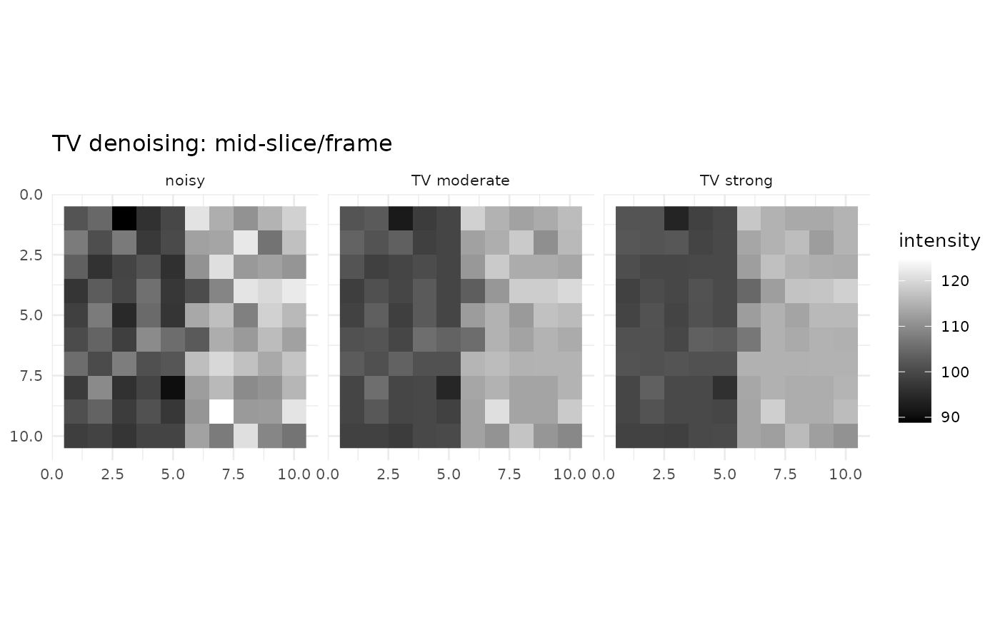

Space–Time Total Variation Denoising
fmrismooth authors
2025-08-28
tv-denoising.RmdTotal variation (TV) denoising assumes the underlying image is piecewise smooth and penalizes the sum of absolute gradients. In space–time fMRI, this preserves edges while reducing high‑frequency noise across both spatial and temporal axes.
fmrismooth provides a 4D ROF‑type TV model solved by a
primal–dual algorithm.
Parameters and their effects
lambda_s controls spatial smoothing; higher values
produce flatter regions between edges. lambda_t controls
temporal smoothing; increasing it enforces consistency across frames.
The algorithm step sizes tau, sigma, and
relaxation theta are set to robust defaults but can be
tuned.
Example
d4 <- c(10, 10, 10, 12)
base <- array(100, dim = d4)
base[6:10, , , ] <- base[6:10, , , ] + 15
noisy <- base + array(rnorm(prod(d4), sd = 5), dim = d4)
tv_moderate <- tv_denoise4d(noisy, lambda_s = 0.6, lambda_t = 0.2, iters = 20L)
tv_strong <- tv_denoise4d(noisy, lambda_s = 0.9, lambda_t = 0.35, iters = 20L)
c(var_noisy = var(as.vector(noisy)),
var_mod = var(as.vector(tv_moderate)),
var_strong = var(as.vector(tv_strong)))
#> var_noisy var_mod var_strong
#> 81.30328 64.57129 59.07842
zmid <- ceiling(d4[3]/2); tmid <- ceiling(d4[4]/2)
viz <- rbind(
slice_df4d(noisy, zmid, tmid, "noisy"),
slice_df4d(tv_moderate, zmid, tmid, "TV moderate"),
slice_df4d(tv_strong, zmid, tmid, "TV strong")
)
ggplot(viz, aes(x, y, fill = val)) + geom_raster() + coord_fixed() + scale_y_reverse() +
scale_fill_gradient(low = "black", high = "white") + facet_wrap(~method) + theme_minimal(base_size = 10) +
labs(title = "TV denoising: mid-slice/frame", x = NULL, y = NULL, fill = "intensity")
TV excels when you want aggressive noise reduction with crisp
boundaries. If small features are oversmoothed, reduce
lambda_s and/or lambda_t, or try a bilateral
or guided filter.